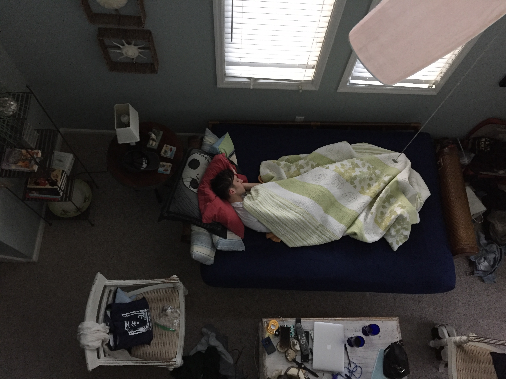
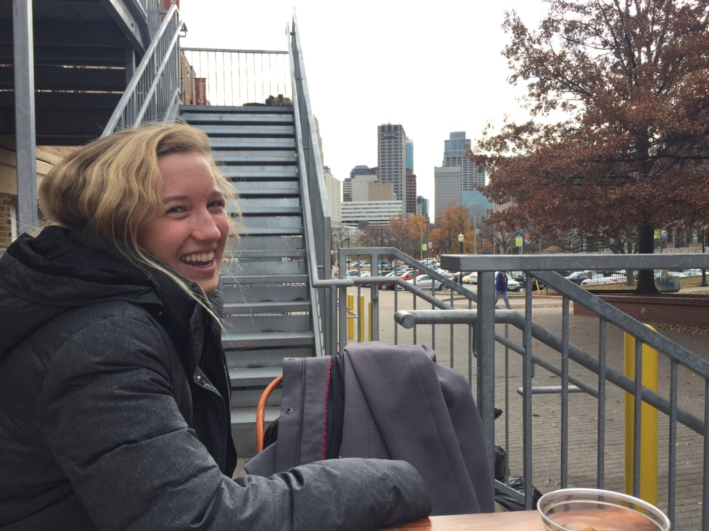
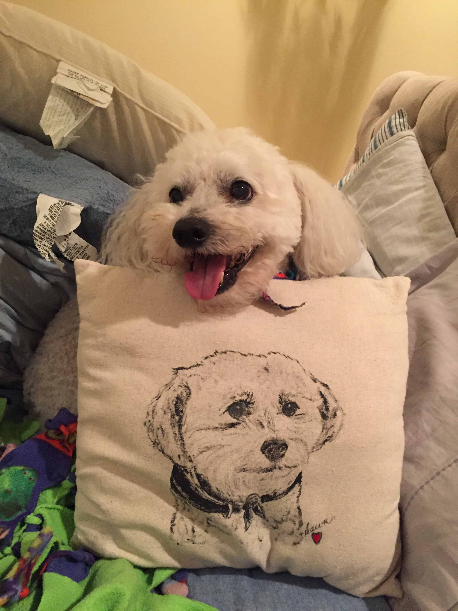

Mom
Full Name: Anne Catherine Faber Byrne
Nickname(s): Mom, Tweetie
Favorite Color: red
Anne grew up in Dubuque, IA to Dennis and Jill Faber. She has two older brothers.
Growing up, she enjoyed running track and playing basketball.
Anne attended Creighton University where she studied elementary education and met her husband, Tom.
She worked as an elementary school teacher until she has her 3rd child and became a fulltime mom.
She now lives in Omaha, NE with the rest of her family.
Dad
Full Name: Thomas Matthew Byrne
Nickname(s): Dad, Tom, Tommy
Favorite Color: blue
Tom grew up in St. Louis, MO. He is the sixth child of 12 total children raised by Paul and Shirley Byrne.
Tom played guitar growing up. He attended Creighton University where he studied biology and met his wife Anne.
After graduating, he attended the University of Nebraska Medical School to become a pediatrician. He now lives in
Omaha Nebraska with his wife and children.
Jane
Full Name: Jane Catherine Byrne
Nickname: Janie, JC, Janie Cakes, Janie Angel, Anita
Favorite Color: green
Jane was raised in Omaha Nebraska. She did ballet and played the violin growing up. She attended Creighton University
where she studied philosophy and dance. She has her Montessori certification in primary education. She is an aspiring
web developer/computer programmer. She works a lot of jobs, which she knows is a choice, but she would like to not anymore.
She lives in Kansas City, MO.
John
Full Name: John Luke Byrne
Nickname(s): Jumper, Jumps, Sean Paul
Favorite Color: blue
John was raised in Omaha, NE. Growing up, he did gymnastics, played the violin, and was a forensics champion.
He attended Creighton University where he studied creative writing. He recently graduated from the University
of Charleston with his masters in poetry. He lives in Charleston, SC.
Caroline
Full Name: Caroline Anne Byrne
Nickname(s): Lulu, Cindy, Smiley
Favorite Color: Aqua
Caroline was raised in Omaha, NE. She was an avid soccer player growing up. She also played the violin.
She attended Creighton University where she studied Spanish and medical anthropology. She is currently
working at an optometrist clinic. She plans on going to med school.
Elizabeth
Full Name: Elizabeth Anne Byrne
Nickname(s): Lizzie, Ms. L
Favorite Color: Blue
Lizzie is the youngest of the Byrne siblings. She goes to Saint Louis University. Everyone
expects great things from her.
Sammy
Full Name: Sammy Shaggles Snowball Walker Byrne
Nickname(s): Sweet Sam, Shaggles, Stinky Tuskadaro, Tail-Wagger
Favorite Color: Sam is a dog...
Sammy has been 13 years old for the last 5 years. He wears a diaper and he always has to be
right in the middle of the group.